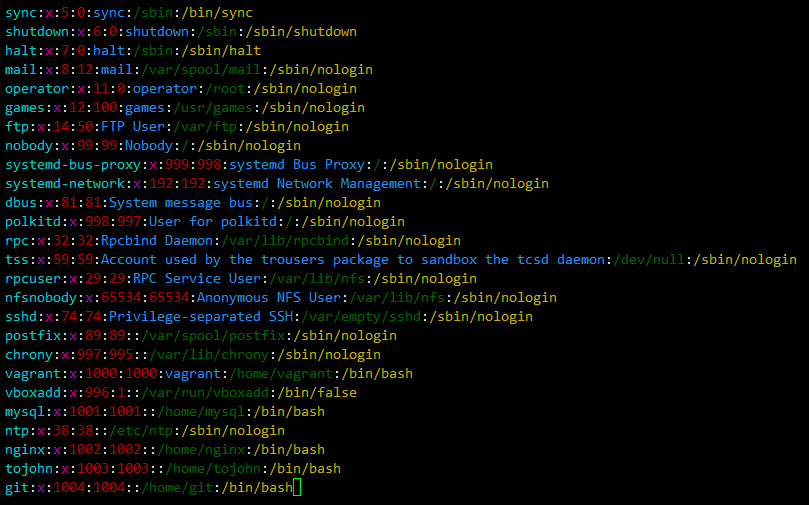
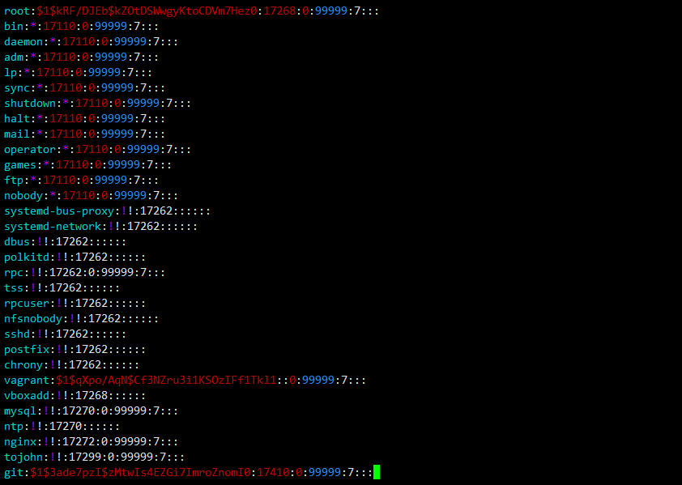
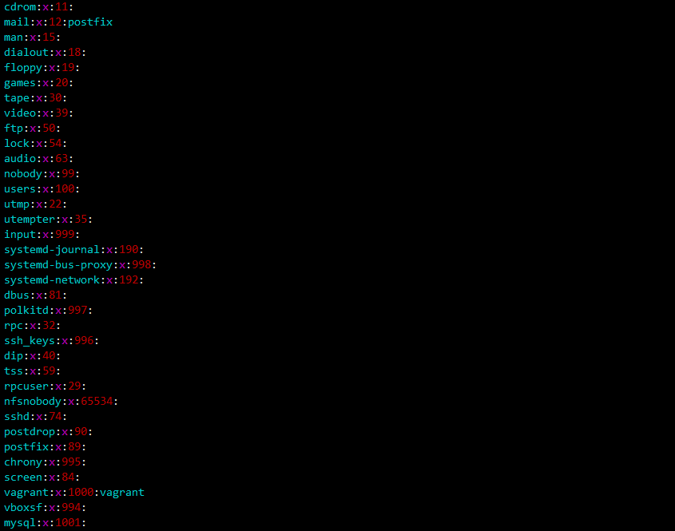
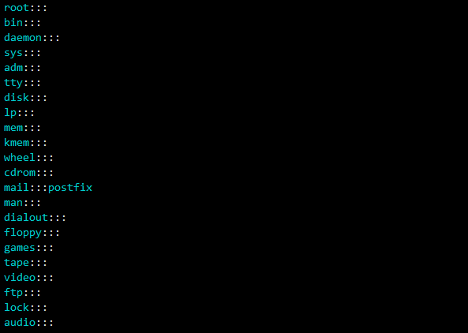

在 Linux 系统中用 UID 来标识用户 , 用户是能够登录并使用 Linux 的用户 ; 用户组是用户的分组 , 用 GID 标识 ; Linux 系统分为 3 种用户 :
Linux 的用户信息保存在 /etc/passwd 文件中 , 用户密码信息是保存在 /etc/shadow 文件中 ;
/etc/passwd 文件格式说明如下 :

文件中每一行是一个用户信息 , 各列以 : 分割 , 各列的含义如下 :
第一个是用户名称 ;
第二个是密码 , 但是这个字段现在已经不用了 , 密码存在在 /etc/shadow 文件中了 , 所以这里固定写x就是了 ;
第三个是 UID , UID 是用户的唯一标示 ;
第四个是 GID , 是指用户所在的首选组的 ID , 和 /etc/group 文件里的组 ID 对应 ;
第五个是用户信息说明信息 , 默认是和用户名一样的值 ;
第六个是用户的 home 目录路径 ;
第七个是用户默认的 Shell 路径 , Linux 的 Shell 类型很多 , 但是大多数是 /bin/bash ;
/etc/shadow 文件格式说明如下 :

文件中每行是一个用户密码信息 , 每行用 : 分割形成9个列 ; 以下是各个列的说明 :
第一列是用户名 , 用户名与 /etc/passwd 文件中的用户名对应 ;
第二列是密码 ; 密码是经过加密过的 , 系统不同计算规则不同 ;
第三列是最后一次修改密码的日期 , 这里是 16982 , 意思是从 1970-01-01 那天之后 16982 天的日期 ;
第四列是密码不可更新的天数 , 就是在设置密码后 , N天之内不能再次修改 , 防止频繁修改密码 , 如果是 0 , 就是随时可以修改密码 ;
第五列是密码必须修改的天数 , 就是在设置密码后 , N天后必须修改密码 , 不然会变成过期状态 ;这里是一堆九 , 大约是 273 年 ;
第六列是密码更改必须修改前多少天发出警告 , 这里是7天 ;
第七列是密码过期后 N 天内还可以使用 , 不过过期后使用时会强制要去修改密码 , 如果在过期N天后还没有修改密码 , 那账号就不能再使用了 ;
第八列是账号失效时间 , 指定日期之后 , 就无法再使用了 ;
第九个是预留的列 , 暂时没用 ;
Linux 的用户组信息保存在 /etc/group 文件中 , 另外 /etc/gshadow 文件存放的是用户组密码相关信息
/etc/group 文件格式说明如下 :

文件中一行是一个用户组信息 , 每行用 : 分割为四列 :
第一列为组名称 ;
第二列为组密码 , 组密码已经移动到 /etc/gshadow 文件中了 , 所以这个固定是 x ;
第三列是 GID , 是用户组的唯一 ID , /etc/passwd 用户信息中的第四个字段就对应于这里的 GID ;
第四列是这个用户组下的用户名称 , 多个用户名以逗号分割 , 如果想将某个用户添加到一个组中 , 就在目标组这一行 , 添加上这个用户名 ;
/etc/gshadow 文件格式说明如下 :

文件中一行是一个用户组密码信息 , 每行用 : 分割为四列 :
第一列为组名称 ;
第二列是密码 ; 密码是经过加密过的 , 系统不同计算规则不同 ;
第三列是用户组管理员的用户名 ;
第四列是组内用户 , 多个用户用逗号分隔 ;
useradd 添加用户
userdel 删除用户
usermod 修改用户的属性
passwd 为用户设置密码
useradd
-c 描述信息
-d 家目录
-g 指定主组 可以用 ID 或组名 (组必须先创建)
-G 指定附加组 可以用 ID 或组名 (组必须先创建)
-s 指定登录的 Shell
-u 指定 uid
# useradd -c manager username // 描述信息
# useradd -d /test/username username // home 目录
# useradd -g group username // 组名 , 主组必须已经存在
# useradd -G group username // 组名
# useradd -s /bin/csh username // 指定 Shell
# useradd -u 600 username // 指定 uid
userdel
-r 删除用户的同时删除家目录 (将用户和用户相关的所有数据全部删除)
# useradd username
# useradd -r username
usermod
usermod 的参数和 useradd 基本一致 -u -g -G -d -s
# usermod -L username // 锁定用户 , 无法登录 , lock (也可以直接修改/etc/shadow密码前加了个 ! )
# usermod -U username // 为用户解锁 , unlock
passwd
root 用户可以修改任何一个用户的密码
# passwd username